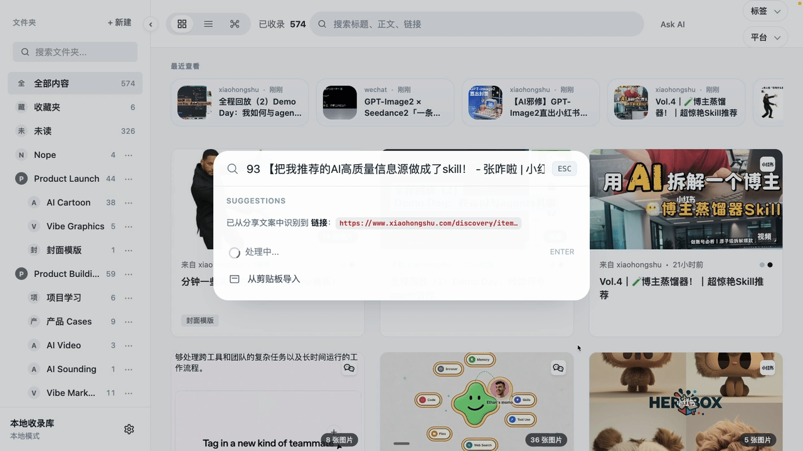
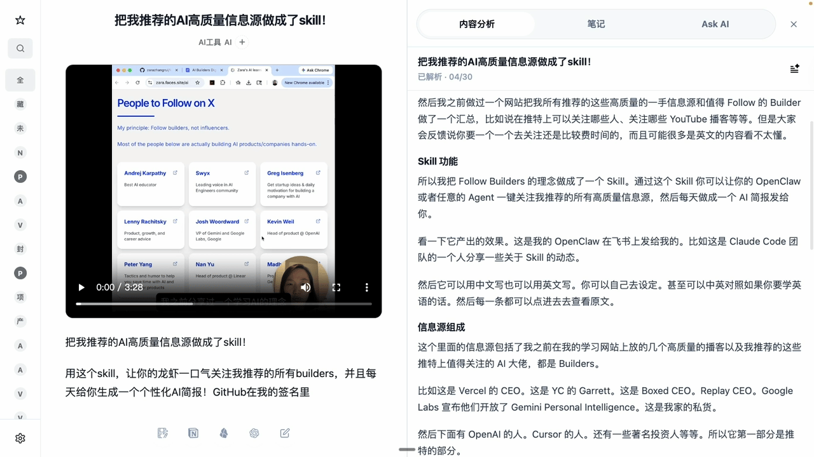

粘贴链接、从剪贴板导入，或者让手机把链接投回本地。后面识别链接、拉正文、存媒体这些活，它自己来。

原文、视频、解析内容、笔记和 AI 侧栏放在一起。看到一半想问“这段讲啥”，不用再开一堆窗口。

标题、正文、链接、标签、平台一起搜。不是只存一个未来可能 404 的链接。
把文件夹、主题和相似内容连起来，看出自己最近到底在研究什么。
让 AI 从本地资料里找线索、列重点，把“我记得看过”变成真的能找到。
整理文件夹、导出 Markdown、同步内容。敏感操作会先让你确认。
自动安装所有依赖，什么都不用提前准备。
curl -O https://raw.githubusercontent.com/agentenatalie/everything-capture/main/setup.sh && bash setup.sh
Web UI、手机快捷指令
⌘K 粘个链接就行
正文、图片、视频全部存到本地
OCR 识字，Whisper 转录语音
全文搜索所有内容
图片里的字、视频里的话都能搜
「给我洛克王国的全攻略」
AI 从收藏库里找到、摘要、总结